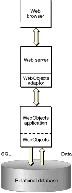

The WebObjects Architecture
When you run a WebObjects application, it communicates with
the Web browser using the process illustrated in Figure 4-3.
Figure
4-3 WebObjects HTML-based application
communication chain

Here is a brief description of the elements involved in the
communication process:
- A
Web browser. WebObjects supports all Web browsers that
conform to HTML 3.2. Of course, if your application uses more advanced
features like JavaScript or QuickTime, the users' browsers must
support these features.
- A Web server. WebObjects supports any
HTTP server that uses the Common Gateway Interface (CGI), the Netscape
Server API (NSAPI), the Internet Server API (ISAPI), or the Apache
module API. Although necessary for deployment, you don't actually
need a Web server while you develop your WebObjects applications.
Alternatively, you can deploy WebObjects applications as servlets
inside a servlet container. See "JSP and Servlets" for more information.
- An HTTP adaptor. The HTTP adaptor connects
WebObjects applications to the Web by acting as an intermediary
between Web applications and HTTP servers. Note that the HTTP adaptor
may not be a separate process but a Web server plugin. An HTTP adaptor
is not needed when an application is deployed as a servlet.
- A WebObjects application instance. The
application instance receives incoming requests and responds to
them, usually by returning a dynamically generated HTML page. You
can run multiple instances of an application when one instance is
insufficient to handle the application's user load. The application
process is made up of your business code and the WebObjects frameworks.
© 2002 Apple Computer, Inc. (Last Updated January 3, 2002)